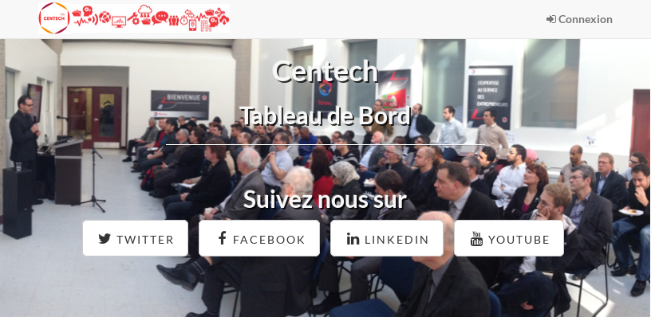

Sommaire

Étudiant à l'École de technologie supérieure, j'ai réalisé plusieurs stages en développement web où j'ai eu à faire la conception et l'implémentation d'application web, ainsi que leurs maintenance corrective, préventive et améliorative.
Je suis aussi un ancien diplomé et technicien en réseaux et télécommunications. Grâce à ces expériences, j'ai eu la chance d'approfondir des connaissances polyvalentes dans le domaine de la programmation, du développement, du réseau, mais aussi de la télécommunication.
J'ai réalisé que j'avais de la facilité à proposer des solutions logicielles répondant à nos besoins et à gérer des projets de manière autonome bien que je sois très à l'aise lors de travaux d'équipes.
Je souhaite entreprendre des travaux d'équipe structuré pour toucher au domaine de la qualité d'assurance et aux normes, tout particulièrement dans l'open-source.
Projets
Voici les différents projets auquel j'ai contribuer de manière active ou auquel je contribue encore.
Tableau de bord (Django/Python)
Le tableau de bord est un outil destiné aux incubateurs de société technologique, il permet de gérer les différentes compagnies incubé et de les suivres tout au long de leurs parcours grâce aux indices de performances disponibles. Le tableau de bord peut aussi vous rendre des statistiques sur les différentes compagnies ou sur des groupes de compagnies.
Voir le projetMaison logiciel libre (CakePHP/PHP)
La maison du logiciel libre (MLL) est une initiative de google et de l'ÉTS visant à améliorer le portfolio des étudiants en génie au travers de projet open-source et libre. Un site communautaire a donc vu le jour, permettant de suivre les projets Open-Source et Libre au travers d'indice de performance et d'un système de notation/commentaire.
J'ai était l'un des développeur en charge du lancement de ce projet. J'ai ensuite contribué en tant qu'auxiliaire d'enseignement.
Voir le projetContact
Si vous souhaitez me contacter, vous le pouvez via:
- Cellulaire : (+1) 514-980-3480
- Courriel : rignon.noel@openmailbox.org
- Profil LinkedIn